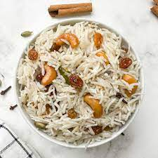

Ghee Rice
Ghee rice is a flavorful dish that features clarified butter (ghee), onions, and lots of rich spices
Follow my easy instructions with step-by-step to make this one pot recipe in a pan, in the Instant Pot and in a stove-top pressure cooker
Ingredients
- 1 cup basmati rice – 190 grams
- 3 tablespoons Ghee (clarified butter)
- 15 to 18 cashews
- 1 tablespoon raisins (without seeds)
- ⅓ cup thinly sliced onions – 50 grams or 1 medium-sized
- 1.75 to 2 cups water for stove-top pan and 1.25 cups for instant pot
- ⅓ teaspoon rock salt (edible and food grade) or add as required
- 1 to 2 tablespoons chopped coriander leaves (cilantro) for garnish
Recipe instructions
- Frying cashews and raisins – Firstly press the sauté button on your Instant Pot. Set the sauté mode to ‘less’ mode. Let the display show “hot”. Add the cashews first. When they begin to get light golden, add raisins and fry until the raisins become plump. Remove them and set aside.
- Frying spices and onions – Add the spices and let them crackle. Tip in the sliced onions. Now set the sauté mode to ‘normal’. Sauté onions until golden. Stir often so that the onions cook evenly.
- Adding rice – Next add the soaked and drained rice. Mix the rice grains very well.
- Adding water – Pour 1.25 cups water and salt as needed. Mix well and deglaze
- Pressure cooking – Seal IP with its lid. Position the pressure valve to the sealing position. Pressure cook on high for 5 minutes.
- Waiting time – When you hear the IP beep after the pressure cooking is complete, wait for 10 minutes before doing a quick pressure release.
- Serving – Carefully lift the valve to remove the extra pressure and steam. Remove the lid. Gently fluff the rice and serve hot garnished with the fried cashews, raisins and coriander leaves.